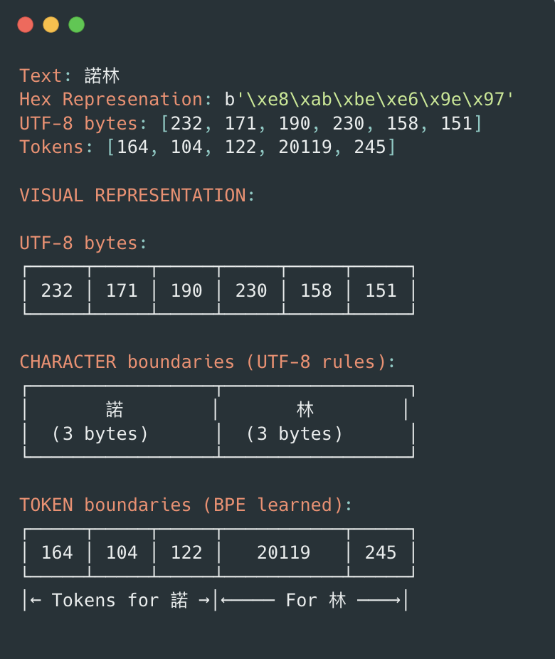

How AI Models Handle English and Chinese Text: The Same Tokenizer for Different Languages
Ever wondered how AI models like ChatGPT can seamlessly chat in English, then switch to Chinese in the same conversation? Learn how UTF-8 encoding and BPE tokenization work together to create universal tokenizers that handle any language.
python
Published
August 3, 2025

bpe.png
Ever wondered how AI models like ChatGPT can seamlessly chat in English, then switch to Chinese in the same conversation? How can one tokenizer handle both “Hello” and “你好” (Hello in Chinese)? Why does Chinese text cost more tokens than English?
The secret lies in a clever combination of UTF-8 encoding and Byte Pair Encoding (BPE). This notebook will show you exactly how it works, step by step.
Part 1: The Universal Language of Computers - UTF-8
The Challenge: Different Languages, Same Computer
Computers natively understand only numbers (0s and 1s). English fits nicely into ASCII’s 128 characters, but what about Chinese? Arabic? Emoji?
UTF-8 is the universal solution that lets computers represent any character from any language using the same system.
Let’s see how English and Chinese characters are stored differently:
# Let's explore how different languages are encoded in UTF-8# Compare English and Chinese characterschars = ['H', 'i', '諾', '林']for char in chars: utf8_bytes = char.encode('utf-8') language ="English"iford(char) <128else"Chinese"print(f"""Character: '{char}' ({language})UTF-8 bytes: {list(utf8_bytes)}Number of bytes: {len(utf8_bytes)}{'-'*40}""")
Character: 'H' (English)
UTF-8 bytes: [72]
Number of bytes: 1
----------------------------------------
Character: 'i' (English)
UTF-8 bytes: [105]
Number of bytes: 1
----------------------------------------
Character: '諾' (Chinese)
UTF-8 bytes: [232, 171, 190]
Number of bytes: 3
----------------------------------------
Character: '林' (Chinese)
UTF-8 bytes: [230, 158, 151]
Number of bytes: 3
----------------------------------------
bytes("諾", "utf-8")
b'\xe8\xab\xbe'
b'\xe8\xab\xbe' can be read as e8, ab, be, the \x is just stating that it is a hex representaiton (base16)
Hex Pair
Calculation
Decimal
e8
e×16¹ + 8×16⁰ = 14×16 + 8×1 = 224 + 8
232
ab
a×16¹ + b×16⁰ = 10×16 + 11×1 = 160 + 11
171
be
b×16¹ + e×16⁰ = 11×16 + 14×1 = 176 + 14
190
Part 2: From Bytes to Tokens - How AI Models See Text
Now here’s the crucial part: AI models don’t work with characters or words directly. They work with “tokens”.
What are Tokens?
Think of tokens as the “vocabulary units” that AI models understand. A token might be: - A common word (like “the” or “and”) - Part of a word (like “un-” in “unhappy”) - A single character - Even punctuation
The key insight: All text, regardless of language, gets converted to numbers (tokens) that the AI model can process.
How BPE (Byte Pair Encoding) Creates a Universal Tokenizer
BPE is the algorithm that makes it possible for one tokenizer to handle all languages:
Step 1: Start with all possible bytes (0-255) as initial tokens.
Step 2: Find the most frequently occurring pairs of tokens in training data
Step 3: Merge frequent pairs into single tokens.
Step 4: Repeat until you have ~50,000 tokens total.
Another way of think of it, your model is actually learning utf-8, rather than “word” that you normally think of. This allow a single tokenizer to handle different langauges.
# BPE tokenization with actual resultsimport tiktoken# Create tokenizers for different modelstokenizer_gpt2 = tiktoken.encoding_for_model("gpt-2")tokenizer_gpt3 = tiktoken.encoding_for_model("gpt-3.5-turbo")# Test with English and Chinesetest_texts = ['Hello', '諾林']for text in test_texts: utf8_bytes = text.encode('utf-8') gpt2_tokens = tokenizer_gpt2.encode(text) gpt3_tokens = tokenizer_gpt3.encode(text) language ="English"ifall(ord(c) <128for c in text) else"Chinese"print(f"""Text: '{text}' ({language})UTF-8 bytes: {list(utf8_bytes)} ({len(utf8_bytes)} bytes)GPT-2 tokens: {gpt2_tokens} ({len(gpt2_tokens)} tokens)GPT-3.5 tokens: {gpt3_tokens} ({len(gpt3_tokens)} tokens)Bytes per token: {len(utf8_bytes)/len(gpt2_tokens):.1f} (GPT-2){'-'*50}""")
Although BPE works for any language, the efficiency varies: - Same BPE algorithm works for any language - English: Often 1 token = 1 word (efficient) - Chinese: Often 1 token = part of 1 character (less efficient) - Efficiency depends on training data frequency
Token Boundaries vs Character Boundaries
Here’s where it gets interesting: token boundaries don’t align with character boundaries!
🚨 KEY INSIGHT: - Character boundaries = Fixed by UTF-8 encoding - Token boundaries = Learned from training data frequency - They DON’T align!
Part 3: The Magic Behind UTF-8 - How Computers Know Where Characters End
Here’s a fascinating question: Given a stream of bytes like [232, 171, 190, 230, 158, 151], how does your computer know this represents two Chinese characters and not six random bytes?
UTF-8’s Clever Bit Pattern System
UTF-8 uses the first few bits of each byte as “metadata” to mark character boundaries:
First Bits
Meaning
Total Bytes for Character
0xxxxxxx
Complete ASCII character
1
110xxxxx
START of 2-byte character
2
1110xxxx
START of 3-byte character
3
11110xxx
START of 4-byte character
4
10xxxxxx
CONTINUATION byte
-
This is why UTF-8 can handle any language while remaining backward-compatible with ASCII!
#hidedef analyze_utf8_byte(byte_val):"""Analyze a UTF-8 byte and return its type""" binary =format(byte_val, '08b')if (byte_val &0b10000000) ==0b00000000:return binary, 'ASCII (complete)'elif (byte_val &0b11100000) ==0b11000000:return binary, 'START of 2-byte char'elif (byte_val &0b11110000) ==0b11100000:return binary, 'START of 3-byte char'elif (byte_val &0b11111000) ==0b11110000:return binary, 'START of 4-byte char'elif (byte_val &0b11000000) ==0b10000000:return binary, 'CONTINUATION'else:return binary, 'INVALID'
Now you understand how AI models can handle any language with a single tokenizer:
The Two-Layer System:
UTF-8 Layer: Converts any text to bytes using smart bit patterns
BPE Layer: Learns byte patterns from multilingual training data
Why This Works:
Universal encoding: UTF-8 handles all languages uniformly
Adaptive learning: BPE learns from whatever languages are in training data
Byte-level processing: No language-specific rules needed
Practical Implications:
Chinese costs more tokens: Less frequent in training = larger byte chunks per token
Same model, all languages: No separate tokenizers needed
Seamless multilingual AI: Natural language switching in conversations
While Byte Pair Encoding is an efficient way to handle universal language, it is probably less useful for language like Chinese because the byte part does not preserve any semantic meaning.